직업상담사-2급 (2020-08-22 기출문제)
1과목: 직업상담학
1. 융(Jung)이 제안한 4단계 치료과정을 순서대로 나열한 것은?
- 고백 → 교육 → 명료화 → 변형
- 고백 → 명료화 → 교육 → 변형
- 고백 → 변형 → 명료화 → 교육
- 명료화 → 고백 → 교육 → 변형
(정답률: 83%)

2. 직업상담의 과정 중 역할사정에서 상호역할관계를 사정하는 방법이 아닌 것은?
- 질문을 통해 사정하기
- 동그라미로 역할관계 그리기
- 역할의 위계적 구조 작성하기
- 생애-계획연습으로 전환시키기
(정답률: 74%)
3. 직업상담자와 내담자 사이에 직업상담관계를 협의하는 내용에 대한 설명으로 틀린 것은?
- 내담자와의 라포형성을 위해서 내담자가 존중받는 분위기를 만들어 주어야 한다.
- 내담자가 직업상담을 받는 것에 대해서 저항을 보일 때는 다른 상담자에게 의뢰해야 한다.
- 상담자와 내담자가 직업상담에 대한 기대가 서로 다를 수 있기 때문에 서로의 역할을 명확히 해야 한다.
- 상담자는 내담자가 직업상담을 통해서 얻고자 하는 것이 무엇인지 분명하게 확인해야 한다.
(정답률: 85%)
4. 수퍼(Super)의 발달적 직업상담에서 의사결정에 이르는 단계를 바르게 나열한 것은?
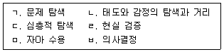
- ㄱ→ㄴ→ㄷ→ㄹ→ㅂ→ㅁ
- ㄱ→ㄷ→ㄴ→ㄹ→ㅂ→ㅁ
- ㄱ→ㄷ→ㅁ→ㄹ→ㄴ→ㅂ
- ㄱ→ㄷ→ㄹ→ㅁ→ㄴ→ㅂ
(정답률: 74%)
5. 직업상담사의 역할이 아닌 것은?
- 내담자에게 적합한 직업 결정
- 내담자의 능력, 흥미 및 적성의 평가
- 직무스트레스, 직무 상실 등으로 인한 내담자 지지
- 내담자의 삶과 직업목표 명료화
(정답률: 77%)
6. 특성-요인 직업상담에서 일련의 관련 있는 또는 관련 없는 사실들로부터 일관된 의미를 논리적으로 파악하여 문제를 하나씩 해결하는 과정은?
- 다중진단
- 선택진단
- 변별진단
- 범주진단
(정답률: 85%)
7. 직업상담을 위해 면담을 하는 중 즉시성(immediacy)을 사용하기에 적합하지 않은 경우는?
- 방향감이 없는 경우
- 신뢰성에 의문이 제기되는 경우
- 내담자가 독립성이 있는 경우
- 상담자와 내담자 간에 사회적 거리감이 있는 경우
(정답률: 68%)
8. 게슈탈트 이론에 관한 설명으로 옳은 것을 모두 고른 것은?
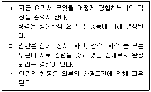
- ㄱ, ㄴ
- ㄱ, ㄷ
- ㄱ, ㄴ, ㄷ
- ㄴ, ㄷ, ㄹ
(정답률: 66%)
9. 직업카드 분류로 살펴보기에 가장 적합한 개인의 특성은?
- 가치
- 성격
- 흥미
- 적성
(정답률: 84%)
10. 6개의 생각하는 모자(sixthinking hats) 기법에서 사용하는 모자 색깔이 아닌 것은?
- 갈색
- 녹색
- 청색
- 흑색
(정답률: 86%)
11. 상담사의 윤리적 태도와 행동으로 옳은 것은?
- 내담자와 상담관계 외에도 사적으로 친밀한 관계를 형성한다.
- 과거 상담사와 성적 관계가 있었던 내담자라도 상담관계를 맺을 수 있다.
- 내담자와 사생활과 비밀보호를 위해 상담 종결 즉시 상담기록을 폐기한다.
- 비밀보호의 예외 및 한계에 관한 갈등상황에서는 동료 전문가의 자문을 구한다.
(정답률: 86%)
12. 실존주의 상담에 관한 설명으로 틀린 것은?
- 실존주의 상담의 궁극적 목적은 치료이다.
- 실존주의 상담은 대면적 관계를 중시한다.
- 인간에게 자기지각의 능력이 있다고 가정한다.
- 자유와 책임의 양면성에 대한 지각을 중시한다.
(정답률: 74%)
13. 개방적 질문의 형태에 가장 거리가 먼 것은?
- 시험이 끝나고서 기분이 어떠했습니까?
- 지난주에 무슨 일이 있었습니까?
- 당신은 학교를 좋아하지요?
- 당신은 누이동생을 어떻게 생각하는지요?
(정답률: 87%)
14. 일반적으로 상담자가 갖추어야 할 기법 중 내담자가 전달하려는 내용에서 한 걸음 더 나아가 그 내면적 감정에 대해 반영하는 것은?
- 해석
- 공감
- 명료화
- 직면
(정답률: 82%)
15. 현실치료적 집단상담의 절차와 가장 거리가 먼 것은?
- 숙련된 질문의 사용
- 유머의 사용
- 개인적인 성장계획을 위한 자기조력
- 조작기법의 사용
(정답률: 52%)
16. 체계적 둔감화를 주로 사용하는 상담기법은?
- 정신역동적 직업상담
- 특성-요인 직업상담
- 발달적 직업상담
- 행동주의 직업상담
(정답률: 70%)
17. 사이버 직업상담에서 답변을 작성할 때 고려해야 할 사항으로 가장 거리가 먼 것은?
- 추수상담의 가능성과 전문기관에 대한 안내를 한다.
- 친숙한 표현으로 답변을 작성하여 내담자가 친근감을 느끼게 한다.
- 답변은 장시간이 소요되더라도 정확하게 하도록 노력한다.
- 청소년이라 할지라도 반드시 존칭을 사용하여 호칭한다.
(정답률: 79%)
18. 콜브(Kolb)의 학습형태검사(LSI)에서 사람에 대한 관심은 적은 반면 추상적 개념에 많은 관심을 두는 사고형은?
- 집중적
- 확산적
- 동화적
- 적응적
(정답률: 77%)
19. 상담이론과 상담목표가 잘못 짝지어진 것은?
- 행동주의 상담이론 – 내담자의 문제행동을 증가시켜 왔던 강화요인을 탐색하고 제거한다.
- 인지행동주의 상담이론 – 내담자가 가지고 있는 비합리적 신념을 확인하고 이를 수정한다.
- 현실치료이론 – 내담자가 원하는 것이 무엇인지 확인하고 이를 달성할 수 있는 적절한 방법을 탐색한다.
- 게슈탈트 상담이론 – 내담자의 생활양식을 확인하고 바람직한 방향으로 생활양식을 바꾸도록 한다.
(정답률: 65%)
20. 직업상담의 목적에 해당하지 않는 것은?
- 개인의 직업적 목표를 명확히 해주는 과정이다.
- 진로관련 의사결정 능력을 길러주는 과정이다.
- 직업선택과 직업생활에서 수동적인 태도를 함양하는 과정이다.
- 이미 결정한 직업계획과 직업선택을 확신, 확인하는 과정이다.
(정답률: 79%)
2과목: 직업심리학
21. 직업상담에 사용되는 질적 측정도구가 아닌 것은?
- 역할놀이
- 제노그램
- 카드분류
- 욕구 및 근로 가치 설문
(정답률: 68%)
22. 직무 스트레스를 조절하는 변인과 가장 거리가 먼 것은?
- 성격 유형
- 역할 모호성
- 통제 소재
- 사회적 지원
(정답률: 53%)
23. 검사 점수의 오차를 발생시키는 수검자 요인과 가장 거리가 먼 것은?
- 수행 능력
- 수행 경험
- 평가 불안
- 수검 당일의 생리적 조건
(정답률: 57%)
24. 어떤 직업적성검사의 신뢰도 계수가 1.0 이면 그 검사의 타당도 계수는?
- 1.0
- 0
- 0.5
- 알 수 없다.
(정답률: 71%)
25. 직업발달에 관한 특성-요인의 종합적인 결과를 토대로 Klein과 Weiner 등이 내린 결론과 가장 거리가 먼 것은?
- 개개인은 신뢰할 만하고 타당하게 측정될 수 있는 고유한 특성의 집합이다.
- 직업의 선택은 직선적인 과정이며 연결이 가능하다.
- 개인의 직업선호는 부모의 양육환경 특성에 의해 좌우된다.
- 개인의 특성과 직업의 요구사항 간에 상관이 높을수록 직업적 성공의 가능성이 커진다.
(정답률: 70%)
26. 직업흥미검사에 대한 설명으로 틀린 것은?
- 직업흥미검사 결과는 변화하므로 일정기간이 지나면 다시 실시하는 것이 좋다.
- 정서적 문제를 가지고 있는 내담자에게 직업흥미검사를 사용하는 것은 부적절하다.
- 직업흥미검사는 진로분야에서 내담자가 만족할 수 있는 분야 뿐만 아니라 성공가능성에 대한 정보도 제공해준다.
- 직업흥미검사 결과는 내담자의 능력, 가치, 고용가능성 등 내담자의 상황에 대한 다른 정보들을 고려하여 의사결정에 활용되어야 한다.
(정답률: 63%)
27. 심리검사 해석 시 주의사항으로 틀린 것은?
- 검사결과를 내담자에게 이야기해 줄 때 가능한 한 이해하기 쉽게 해주어야 한다.
- 내담자에게 검사의 점수보다는 진점수의 범위를 말해주는 것이 좋다.
- 검사결과를 내담자와 함께 해석하는 것은 검사전문가로서는 해서는 안되는 일이다.
- 내담자의 방어를 최소화하기 위해 상담자는 중립적이고 무비판적이어야 한다.
(정답률: 77%)
28. 작업자 중심의 직무분석에 관한 설명으로 옳지 않은 것은?(문제 오류로 가답안 발표시 2번으로 발표되었지만 확정답안 발표시 1, 2번이 정답처리 되었습니다. 여기서는 가답안인 2번을 누르시면 정답 처리 됩니다.)
- 직무를 수행하기 위한 구체적인 인적 요건들을 밝히는 직무기술서로 나타난다.
- 직무에서 수행하는 과제나 활동이 어떤 것들인지를 파악하는데 초점을 둔다.
- 어떠한 직무에서나 사용할 수 있는 표준화된 직무분석 질문지를 제작해서 사용할 수 있다.
- 지식, 기술, 능력, 경험 등 작업자 개인 요건들로 직무를 표현한다.
(정답률: 73%)
29. 직업적응이론의 적응유형 변인 중 적응행동 과정에서 나타나는 적응의 시작과 종료의 지속기간을 나타내는 것은?
- 유연성
- 능동성
- 수동성
- 인내
(정답률: 76%)
30. 사회학습이론에 기반한 진로발달 과정의 요인으로 다음 사례와 밀접하게 관련 있는 것은?
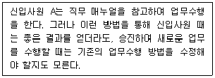
- 유전적 요인과 특별한 능력
- 직무 적성
- 학습 경험
- 과제접근 기술
(정답률: 77%)
31. 직무 스트레스에 관한 설명으로 틀린 것은?
- 지루하게 반복되는 과업의 단조로움은 매우 위험한 스트레스 요인이 될 수 있다.
- 복잡한 과제는 정보 과부하를 일으켜 스트레스를 높인다.
- 공식적이고 구조적인 조직에서 주로 인간관계 변수 때문에 역할갈등이 발생한다.
- 역할 모호성은 개인의 역할이 명확하지 않을 때 발생한다.
(정답률: 61%)
32. 성격의 5요인(Big Five)에 해당하지 않는 것은?
- 정서적 안정성
- 정확성
- 성실성
- 호감성
(정답률: 53%)
33. 다음 사례에서 A에게 해당하는 홀랜드(Holland)의 직업성격 유형은?
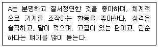
- 탐구적(I)
- 사회적(S)
- 실제적(R)
- 관습적(C)
(정답률: 69%)
34. 데이비스와 롭퀘스트(Davis & Lofquist)의 직업적응이론에서 적응양식의 차원에 해당하지 않는 것은?
- 의존성(dependence)
- 적극성(activeness)
- 반응성(reactiveness)
- 인내(persenerance)
(정답률: 54%)
35. Super의 진로발단단계 중 결정화, 구체화, 실행 등과 같은 과업이 수행되는 단계는?
- 성장기
- 탐색기
- 확립기
- 유지기
(정답률: 51%)
36. 로(Roe)의 욕구이론에 관한 설명으로 옳지 않은 것은?
- 아동기에 형성된 욕구에 대한 반응으로 직업선택이 이루어진다고 본다.
- 가정 분위기의 유형을 회피형, 정서집중형, 통제형으로 구분하였다.
- 직업군을 8가지로 분류하였다.
- 매슬로우가 제시한 욕구의 단계를 기초로 해서 초기의 인생경험과 직업선택의 관계에 관한 가정을 발전시켰다.
(정답률: 57%)
37. 자신의 직무나 직무경험에 대한 평가로부터 비롯되는 유쾌하거나 정적인 감정 상태는?
- 직무만족
- 직업적응
- 작업동기
- 직무몰입
(정답률: 80%)
38. 다음 설명에 해당하는 행동특성을 바르게 나타낸 것은?
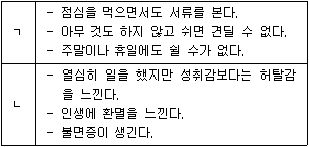
- ㄱ : 일 중독증, ㄴ : 소진
- ㄱ : A형 성격, ㄴ : B형 성격
- ㄱ : 내적 통제소재, ㄴ : 외적 통제소재
- ㄱ : 과다 과업지향성, ㄴ : 인간관계지향성
(정답률: 84%)
39. 가치중심적 진로접근모형의 명제에 관한 설명으로 틀린 것은?
- 개인이 우선권을 부여하는 가치들은 얼마되지 않는다.
- 가치는 환경 속에서 가치를 담은 정보를 획득함으로써 학습된다.
- 생애만족은 중요한 모든 가치들을 만족시키는 생애역할들에 의존한다.
- 생애역할에서의 성공은 개인적 요인보다는 외적 요인들에 의해 주로 결정된다.
(정답률: 69%)
40. 다음 중 조직에서 직원의 경력개발을 위해 사용하는 프로그램과 가장 거리가 먼 것은?
- 사내 공모제
- 후견인(mentoring) 프로그램
- 직무평가
- 직무순환
(정답률: 67%)
3과목: 직업정보론
41. 다음은 워크넷에서 제공하는 성인을 위한 직업적응검사 중 무엇에 관한 설명인가?
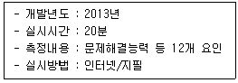
- 구직준비도검사
- 직업전환검사
- 중장년 직업역량검사
- 창업적성검사
(정답률: 46%)
42. 직업상담시 제공하는 직업정보의 기능과 역할에 대한 설명으로 틀린 것은?
- 여러 가지 직업적 대안들의 정보를 제공한다.
- 내담자의 흥미, 적성, 가치 등을 파악하는 것이 직업정보의 주기능이다.
- 경험이 부족한 내담자에게 다양한 직업들을 간접적으로 접할 기회를 제공한다.
- 내담자가 자신의 선택이 현실에 비추어 부적당한 선택이었는지를 점검하고 재조정해 볼 수 있는 기초를 제공한다.
(정답률: 58%)
43. 워크넷에서 제공하는 채용정보 중 기업형태별 검색에 해당하지 않는 것은?
- 대기업
- 가족친화인증기업
- 외국계기업
- 금융권기업
(정답률: 69%)
44. 제10차 한국표준산업분류의 산업결정방법에 관한 설명으로 틀린 것은?
- 생산단위의 산업활동은 그 생산단위가 수행하는 주된 산업활동의 종류에 따라 결정된다.
- 계절에 따라 정기적으로 산업을 달리하는 사업체의 경우에는 조사시점에서 경영하는 산업에 의해 결정된다.
- 휴업 중 또는 청산중인 사업체의 산업은 영업 중 또는 청산을 시작하기 이전의 산업활동에 의해 결정된다.
- 단일사업체 보조단위는 그 사업체의 일개 부서로 포함한다.
(정답률: 71%)
45. 고용안전장려금(워라밸일자리 장려금)에 관한 설명으로 틀린 것은?
- 근로자의 계속유형을 위해 근로시간 단축, 근로시간 유연화 제도 등을 시행하면 지급한다.
- 사업주의 배우자, 4촌 이내의 혈족·인척은 지원대상자에서 제외한다.
- 근로시간 단축 개시일이 속하는 다음달부터 1년의 범위 내에서 1개월 단위로 지급한다.
- 임신 근로자의 임금감소 보전금은 월 최대 24만원이다.
(정답률: 59%)
46. 한국표준직업분류(2017)에서 포괄적인 업무에 대해 적용하는 직업분류 원칙을 순서대로 나열한 것은?
- 주된 직무 → 최상급 직능수준 → 생산업무
- 최상급 직능수준 → 주된 직무 → 생산업무
- 최상급 직능수준 → 생산업무 → 주된 직무
- 생산업무 → 최상급 직능수준 → 주된 직무
(정답률: 65%)
47. 사업주 직업능력개발훈련 수행기관 중 '전국 고용센터'의 업무에 해당하지 않는 것은?
- HRD-Net 사용인증
- 지정 훈련 시설 인·지정
- 훈련과정 지도·점검
- 위탁훈련(상시검사 제외) 과정 심사
(정답률: 48%)
48. 공공직업정보의 일반적인 특성에 대한 설명으로 틀린 것은?
- 전 산업 및 직종을 대상으로 지속적으로 조사·분석한다.
- 보편적 항목으로 이루어진 기초정보가 많다.
- 관련 직업 간 비교가 용이하다.
- 단시간에 조사하고 특정 목적에 맞게 직종을 제한적으로 선택한다.
(정답률: 79%)
49. 다음은 한국직업사전의 부가직업정보(작업강도) 중 무엇에 관한 설명인가?
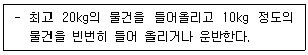
- 아주 가벼운 작업
- 가벼운 작업
- 보통 작업
- 힘든 작업
(정답률: 72%)
50. 국민내일배움카드제의 직업능력개발계좌의 발급 대상에 해당하는 자는?
- 「사립학교교직원 연금법」을 적용받고 현재 재직 중인 사람
- 만 65세인 사람
- 중앙행정기관으로부터 훈련비를 지원받는 훈련에 참여하는 사람
- HRD-Net을 통하여 직업능력개발훈연 동영상 교육을 이수하지 아니하는 사람
(정답률: 61%)
51. 직업정보를 가공할 때 유의해야 할 사항으로 틀린 것은?
- 시청각적 효과를 첨가한다.
- 직업에 대한 장·단점을 편견 없이 제공한다.
- 가장 최선의 자료를 활용하되, 표준화된 정보를 활용한다.
- 직업은 전문적인 것이므로 가능하면 전문적인 용어를 사용하여 가공한다.
(정답률: 82%)
52. 한국직업전망(2019)의 향후 10년간 직업별 일자리 전망 결과 '증가'가 예상되는 직업에 해당하지 않는 것은?
- 어업 종사자
- 사회복지사
- 간병인
- 간호사
(정답률: 80%)
53. 건설기계설비기사, 공조냉동기계기사, 승강기기사 자격이 공통으로 해당되는 직무분야는?
- 건설분야
- 재료분야
- 기계분야
- 안전관리분야
(정답률: 68%)
54. 워크넷에서 제공하는 학과정보 중 공학계열에 해당하는 것은?
- 생명과학과
- 조경학과
- 통계학과
- 응용물리학과
(정답률: 53%)
55. 직업정보의 일반적인 정보관리순서로 가장 적합한 것은?
- 수집 → 분석 → 가공 → 체계화 → 제공 → 평가
- 수집 → 제공 → 분석 → 가공 → 평가 → 체계화
- 수집 → 분석 → 평가 → 가공 → 제공 → 체계화
- 수집 → 분석 → 체계화 → 제공 → 가공 → 평가
(정답률: 76%)
56. 제10차 한국표준산업분류의 대분류 중 제조업 정의에 관한 설명으로 틀린 것은?
- 원재료(물질 또는 구성요소)에 물리적, 화학적 작용을 가하여 투입된 원재료를 성질이 다른 새로운 제품으로 전환시키는 산업활동이다.
- 단순히 상품을 선별·정리·분할·포장·재포장하는 경우 등과 같이 그 상품의 본질적 성질을 변화시키지 않는 처리활동은 제조 활동으로 보지 않는다.
- 제조활동은 공장이나 가내에서 동력기계 및 수공으로 이루어질 수 있으며, 생산된 제품은 도매나 소매형태로 판매될 수도 있다.
- 자본재(고정자본 형성)로 사용되는 산업용 기계와 장비를 전문적으로 수리하는 경우는 수리업으로 분류한다.
(정답률: 50%)
57. 직업정보 제공에 관한 설명으로 옳은 것은?
- 모든 내담자에게 직업정보를 우선적으로 제공한다.
- 직업상담사는 다양한 직업정보를 제공하기 위해 지속적으로 노력한다.
- 진로정보 제공은 직업상담의 초기단계에서 이루어지며, 이 경우 내담자의 피드백은 고려하지 않는다.
- 내담자가 속한 가족, 문화보다는 표준화된 정보를 우선적으로 고려하여 정보를 제공한다.
(정답률: 73%)
58. 국가기술자격 중 응시자격의 제한이 없는 서비스분야는?
- 스포츠경영관리사
- 임상심리사2급
- 컨벤션기획사1급
- 국제의료관광코디네이터
(정답률: 73%)
59. 한국표준직업분류(2017)의 대분류 9에 해당하는 것은?
- 사무 종사자
- 단순노무 종사자
- 서비스 종사자
- 기능원 및 관련 기능 종사자
(정답률: 64%)
60. 제10차 한국표준산업분류의 적용원칙에 관한 설명으로 틀린 것은?
- 생산단위는 산출문뿐만 아니라 투입물과 생산 공정 등을 함께 고려하여 그들의 활동을 가장 정확하게 설명된 항목에 분류한다.
- 복합적인 활동 단위는 우선적으로 최상급 분류단계(대분류)를 정확히 결정하고, 순차적으로 중, 소, 세, 세세분류 단계항목을 결정한다.
- 산업 활동이 결합되어 있는 경우에는 그 활동단위의 주된 활동에 따라 분류한다.
- 계약에 의하여 활동을 수행하는 단위는 자기계정과 자기책임 하에서 생산하는 단위와 별도항목으로 분류되어야 한다.
(정답률: 68%)
4과목: 노동시장론
61. 우리나라 기업의 노사협의회에서 다루고 있지 않은 사항은?
- 생산성 향상과 성과 배분
- 근로자의 채용·배치 및 교육훈련
- 임금 및 근로조건의 교섭
- 안전, 보건, 그 밖의 작업환경 개선과 근로자의 건강증진
(정답률: 39%)
62. 실업률을 낮추기 위한 대책과 가장 거리가 먼 것은?
- 직업훈련 기회의 제공
- 재정지출의 축소
- 금리 인하
- 법인세 인하
(정답률: 64%)
63. 우리나라에 10개의 야구공 생산업체가 있다. 야구공은 개당 1000원에 거래되고 있다. 각 기업의 야구공 생산함수와 노동의 한계생산은 다음과 같다. 우리나라에 야구공을 만드는 기술을 가진 근로자가 500명 있으며, 이들의 노동공급이 완전비탄력적이고 야구공의 가격은 일정하다고 할 때, 균형임금수준은 얼마인가?
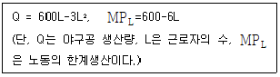
- 100000원
- 200000원
- 300000원
- 400000원
(정답률: 57%)
64. 최종생산물이 수요자에 의하여 수요되기 때문에 그 최종생산물을 생산하는 데 투입되는 노동이 수요된다고 할 때 이러한 수요를 무엇이라고 하는가?
- 유효수요
- 잠재수요
- 파생수요
- 실질수요
(정답률: 63%)
65. 합리적인 임금체계가 갖추어야 할 기능과 가장 거리가 먼 것은?
- 종업원에 대한 동기유발 기능
- 유능한 인재확보 기능
- 보상의 공정성 기능
- 생존권보장 기능
(정답률: 51%)
66. 던롭(Dunlop)이 노사관계를 규제하는 여건 혹은 환경으로 지적한 사항이 아닌 것은?
- 시민의식
- 기술적 특성
- 시장 또는 예산제약
- 각 주체의 세력관계
(정답률: 66%)
67. 다음 표에서 실업률은?
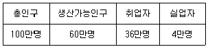
- 4.0%
- 6.7%
- 10.0%
- 12.5%
(정답률: 60%)
68. 필립스곡선은 어떤 변수 간의 관계를 설명하는 것인가?
- 임금상승률과 노동참여율
- 경제성장률과 실업률
- 환율과 실업률
- 임금상승률과 실업률
(정답률: 62%)
69. 다음 중 최저임금제 도입의 직접적인 목적과 가장 거리가 먼 것은?
- 고용 확대
- 구매력 증대
- 생계비 보장
- 경영합리화 유도
(정답률: 58%)
70. 다음 중 기업들이 기업내의 승진정체에 대응하여 도입하고 있는 제도와 가장 거리가 먼 것은?
- 정년단축
- 자회사에서의 파견
- 조기퇴직 유도
- 연봉제의 강화
(정답률: 67%)
71. 다음 중 내부노동시장의 특징과 가장 거리가 먼 것은?
- 제1차 노동자로 구성되어 진다.
- 장기근로자로 구성되어 진다.
- 승진제도가 중요한 역할을 한다.
- 고용계약 형태가 다양하다.
(정답률: 62%)
72. A산업의 평균임금이 B산업보다 높을 경우 그 이유와 가장 거리가 먼 것은?
- A산업의 노동조합이 B산업보다 약하다.
- A산업 근로자의 생산성이 B산업 근로자보다 높다.
- A산업 근로자의 숙련도 수준이 B산업 근로자의 숙련도 수준보다 높다.
- A산업은 최근 급속히 성장하고 있어 노동수요에 노동공급이 충분히 대응하지 못하고 있다.
(정답률: 70%)
73. 노동공급에 관한 설명으로 틀린 것은?
- 노동공급의 임금탄력성은 노동공급량의 변화율/임금의 변화율 이다.
- 노동공급을 결정하는 요인으로서 인구는 양적인 규모뿐만 아니라 연령별, 지역별, 질적 구조도 중요한 의미를 갖는다.
- 효용극대화에 기초한 노동공급모형에서 대체효과가 소득효과 보다 클 경우 임금의 상승은 노동공급을 감소시키고 노동공급곡선은 후방으로 굴절된다.
- 사회보장급여의 수준이 지나치게 높을 경우 노동공급에 대한 동기유발이 저해되어 총 노동공급이 감소된다.
(정답률: 63%)
74. 다음의 현상을 설명하는 개념은?
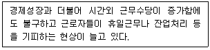
- 임금의 하방경직성
- 후방굴절형 노동공급곡선
- 노동의 이력현상(hysteresis)
- 임금의 화폐적 현상
(정답률: 74%)
75. 임금체계의 공평성(equity)에 관한 설명으로 옳은 것은?
- 승자일체 취득의 원칙을 말한다.
- 최저생활을 보장해 주는 임금원칙을 말한다.
- 근로자의 공헌도에 비례하여 임금을 지급한다.
- 연령, 근속년수가 같으면 동일한 임금을 지급한다.
(정답률: 60%)
76. 다음 중 마찰적 실업에 관한 설명으로 옳은 것은?
- 경기침체로부터 오는 실업이다.
- 구인자와 구직자간의 정보의 불일치로 인해 발생한다.
- 기업이 요구하는 기술수준과 노동자가 공급하는 기술수준의 불합치에 의해 발생한다.
- 노동절약적 기술 도입으로 해고가 이루어짐으로써 발생한다.
(정답률: 73%)
77. 다음 중 노동조합의 조직률을 하락시키는 요인과 가장 거리가 먼 것은?
- 외국인 근로자 비율의 증가
- 국내 산업 보호를 위한 수입관세 인상
- 서비스업으로로의 산업구조 변화
- 노동자의 기호와 가치관의 변화
(정답률: 65%)
78. 파업을 설명하는 힉스(J. R. Hicks)의 단체교섭모형에 관한 설명으로 틀린 것은?
- 노사 양측의 대칭적 정보 때문에 파업이 일어나지 않고 적정수준에서 임금타결이 이루어진다.
- 노동조합의 요구임금과 사용자측의 제의임금은 파업기간의 함수이다.
- 사용자의 양보곡선(concession curve)은 우상향한다.
- 노동조합의 저항곡선(resistance curve)은 우하향한다.
(정답률: 59%)
79. 노동수요의 탄력성 결정요인이 아닌 것은?
- 다른 요소와의 대체가능성
- 총생산비에 대한 노동비용의 비중
- 다른 생산요소의 수요의 가격탄력성
- 상품에 대한 수요의 탄력성
(정답률: 47%)
80. 다음 중 노동조합이 조합원의 확대와 사용자와의 교섭에서 가장 불리하다고 볼 수 있는 숍(shop)제도는?
- closed shop
- open shop
- union shop
- agency shop
(정답률: 63%)
5과목: 노동관계법규
81. 근로기준법령상 상시 10명 이상의 근로자를 사용하는 사용자가 취업규칙을 작성하여 고용노동부장관에게 신고해야 하는 사항이 아닌 것은?
- 업무의 시작시각
- 임금의 산정기간
- 근로자의 식비 부담
- 근로계약기간
(정답률: 52%)
82. 헌법 제32조에 관한 설명으로 옳지 않은 것은?
- 근로조건의 기준은 인간의 존엄성을 보장하도록 법률로 정한다.
- 국가는 법률이 정하는 바에 의하여 최저임금제를 시행하여야 한다.
- 고령자의 근로는 특별한 보호를 받는다.
- 여자의 근로는 특별한 보호를 받는다.
(정답률: 57%)
83. 고용상 연령차별금지 및 고령자고용촉진에 관한 법령성 용어정의에 관한 설명으로 틀린 것은?
- “고령자”란 인구와 취업자의 구성 등을 고려하여 55세 이상인 자를 말한다.
- “준고령자”란 50세 이상 55세 미만인 사람으로 고령자가 아닌 자를 말한다.
- “근로자”란 「노동조합 및 노동관계 조정법」에 따른 근로자를 말한다.
- “사업주”란 근로자를 사용하여 사업을 하는 자를 말한다.
(정답률: 63%)
84. 남녀고용평등과 일·가정 양립 지원에 관한 법률상 남녀고용평등 실현과 일·가정의 양립에 관한 기본계획에 포함되어야 할 사항을 모두 고른 것은?
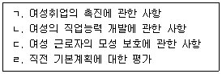
- ㄱ, ㄴ
- ㄷ, ㄹ
- ㄱ, ㄴ, ㄷ
- ㄱ, ㄴ, ㄷ, ㄹ
(정답률: 68%)
85. 근로기준법령상 용어정의에 관한 설명으로 틀린 것은?
- “근로자”란 직업의 종류와 관계없이 임금을 목적으로 사업이나 사업장에 근로를 제공하는 자를 말한다.
- “근로”란 정신노동과 육체노동을 말한다.
- “통상임금”이란 이를 산정하여야 할 사유가 발생한 날 이전 3개월 동안 그 근로자에게 지급된 임금의 총액을 그 기간의 총일수로 나눈 금액을 말한다.
- “사용자”란 사업주 또는 사업 경영 담당자, 그 밖에 근로자에 관한 사항에 대하여 사업주를 위하여 행위하는 자를 말한다.
(정답률: 63%)
86. 근로자직업능력개발법령상 직업능력개발훈련이 중요시되어야 할 대상으로 명시되지 않은 것은?
- 고령자·장애인
- 여성근로자
- 일용근로자
- 제조업의 생산직에 종사하는 근로자
(정답률: 72%)
87. 근로자직업능력개발법령상 다음은 어떤 훈련방법에 관한 설명인가?
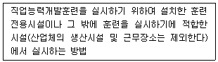
- 현장훈련
- 집체훈련
- 원격훈련
- 혼합훈련
(정답률: 63%)
88. 고용보험법령상 ( )에 들어갈 숫자로 옳은 것은?
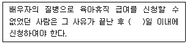
- 10
- 30
- 60
- 90
(정답률: 40%)
89. 근로기준법상 임금에 대한 설명으로 틀린 것은?
- 임금은 원칙적으로 통화로 직접 근로자에게 그 전액을 지급하여야 한다.
- 사용자의 귀책사유로 휴업하는 경우 휴업기간 동안 근로자에게 통상임금의 100분의 60 이상의 수당을 지급하여야 한다.
- 임금채권은 3년간 행사하지 아니하면 시효로 소멸한다.
- 임금은 원칙적으로 매월 1회 이상 일정한 날짜를 정하여 지급하는 것이 원칙이다.
(정답률: 74%)
90. 고용정책 기본법에 대한 설명으로 틀린 것은?
- 고용서비스를 제공하는 자는 그 업무를 수행할 때에 합리적인 이유 없이 성별 등을 이유로 구직자를 차별하여서는 아니 된다.
- 고용노동부장관은 5년마다 국가의 고용정책에 관한 기본계획을 수립하여야 한다.
- 상시 100명 이상의 근로자를 사용하는 사업주는 매년 근로자의 고용형태 현황을 공시하여야 한다.
- “근로자”란 사업주에게 고용된 사람과 취업할 의사를 가진 사람을 말한다.
(정답률: 59%)
91. 기간제 및 단시간근로자 보호 등에 관한 법령상 적용범위에 관한 설명으로 틀린 것은?
- 상시 5인 이상의 근로자를 사용하는 모든 사업 또는 사업장에 적용한다.
- 동거의 친족만을 사용하는 사업장에는 적용하지 아니한다.
- 상시 4인 이하의 근로자를 사용하는 사업 또는 사업장에 대하여는 이 법의 일부 규정을 적용할 수 있다.
- 국가 및 지방자치단체의 기관에 대하여는 이 법을 적용하지 않는다.
(정답률: 63%)
92. 남녀고용평등과 일·가정 양립지원에 관한 법령에 규정된 내용으로 틀린 것은?
- 사업주는 근로자를 모집할 때 남녀를 차별하여서는 아니 된다.
- 사업주는 동일한 사업 내의 동일 가치 노동에 대하여는 동일한 임금을 지급하여야 한다.
- 사업주는 직장 내 성희롱 예방을 위한 교육을 연 2회 이상 하여야 한다.
- 고용노동부장관은 남녀고용평등 실현과 일·가정의 양립에 관한 기본계획을 5년마다 수립하여야 한다.
(정답률: 77%)
93. 개인정보보호법령상 개인정보 보호위원회(이하 “보호위원회”라 한다)에 관한 설명으로 틀린 것은?(문제 오류로 가답안 발표시 2번으로 발표되었지만 확정답안 발표시 1, 2번이 정답처리 되었습니다. 여기서는 가답안인 2번을 누르시면 정답 처리 됩니다.)
- 보호위원회는 위원장 1명, 상임위원 1명을 포함한 15명 이내의 위원으로 구성한다.
- 위원장과 위원의 임기는 2년으로 하되, 1차에 한하여 연임할 수 있다.
- 보호위원회의 회의는 위원장이 필요하다고 인정하거나 재적위원 4분의 1 이상의 요구가 있는 경우에 위원장이 소집한다.
- 보호위원회는 재적위원 과반수의 출석과 출석위원 과반수의 찬성으로 의결한다.
(정답률: 64%)
94. 고용상 연령차별금지 및 고령자고용촉진에 관한 법령상 정년에 대한 설명으로 틀린 것은?
- 사업주는 정년에 도달한 자가 그 사업장에 다시 취업하기를 희망할 때 그 직무수행 능력에 맞는 직종에 재고용하도록 노력하여야 한다.
- 사업주는 근로자의 정년을 60세 이상으로 정하여야 한다.
- 사업주는 고령자인 정년퇴직자를 재고용함에 있어 임금의 결정을 종전과 달리할 수 없다.
- 상시 300명 이상의 근로자를 사용하는 사업주는 매년 정년제도의 운영현황을 고용노동부장관에게 제출하여야 한다.
(정답률: 70%)
95. 고용보험법령상 피보험자격의 상실일에 해당하지 않는 것은?
- 피보험자가 적용 제외 근로자에 해당하게 된 경우에는 그 적용 제외 대상자가 된 날
- 피보험자가 이직한 경우에는 이직한 날의 다음 날
- 피보험자가 사망한 경우에는 사망한 날의 다음 날
- 보험관계가 소멸한 경우에는 그 보험관계가 소멸한 날의 다음 날
(정답률: 57%)
96. 고용정책 기본법령상 고용정책심의회에 관한 설명으로 틀린 것은?
- 정책심의회는 위원장 1명을 포함한 20명 이내의 위원으로 구성한다.
- 근로자와 사업주를 대표하는 자는 심의 위원으로 참여할 수 있다.
- 특별시·광역시·특별자치시·도 및 특별자치도에 지역고용심의회를 둔다.
- 고용정책심의회를 효율적으로 운영하기 위하여 분야별 전문위원회를 둘 수 있다.
(정답률: 59%)
97. 남녀고용평등과 일·가정 양립지원에 관한 법령상 육아휴직 기간에 대한 설명으로 틀린 것은?
- 육아휴직의 기간은 2년 이내로 한다.
- 사업주는 육아휴직 기간에는 근로자를 해고하지 못한다.
- 육아휴직 기간은 근속기간에 포함한다.
- 기간제근로자의 육아휴직 기간은 「기간제 및 단시간근로자 보호 등에 관한 법률」에 따른 사용기간에 산입하지 아니한다.
(정답률: 65%)
98. 직업안전법령상 직업소개업과 겸업이 금지되는 사업이 아닌 것은?
- 「결혼중개업의 관리에 관한 법률」상 결혼중개업
- 「파견근로자보호 등에 관한 법률」상 근로자 파견사업
- 「식품위생법」상 식품접객업 중 단란주점영업
- 「공중위생관리법」상 숙박업
(정답률: 63%)
99. 고용보험법령상 용어정의에 관한 설명으로 틀린 것은?
- “실업의 인정”이란 직업안정기관의 장이 수급자격자가 실업한 상태에서 적극적으로 직업을 구하기 위하여 노력하고 있다고 인정하는 것을 말한다.
- 3개월 동안 고용된 자는 “일용근로자”에 해당한다.
- “이직”은 피보험자와 사업주 사이의 고용관계가 끝나게 되는 것을 말한다.
- “실업”은 근로의 의사와 능력이 있음에도 불구하고 취업하지 못한 상태에 있는 것을 말한다.
(정답률: 73%)
100. 직업안정법에 관한 설명으로 틀린 것은?
- 누구든지 어떠한 명목으로든 구인자로부터 그 모집과 관련하여 금품을 받거나 그 밖의 이익을 취하여서는 아니 된다.
- 누구든지 국외에 취업할 근로자를 모집한 경우에는 고용노동부장관에게 신고하여야 한다.
- 누구든지 고용노동부장관의 허가를 받지 아니하고는 근로자공급사업을 하지 못한다.
- 누구든지 성별, 연령 등을 이유로 직업소개를 할 때 차별대우를 받지 아니한다.
(정답률: 42%)